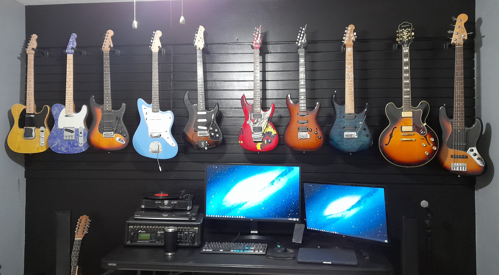
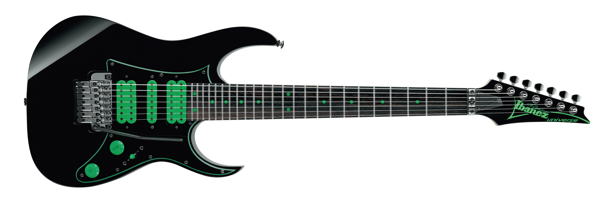

Collection
Studio - Puerto Rico
I turned my room into a mini studio where I practiced and recorded music. I installed a slat wall which allowed me to hang the guitars and move them around as needed. The centerpiece of that setup was a Fractal Audio AxeFxII which is an amp simulator, effects processor and audio interface all in one. I also used JBL studio monitor speakers, Audio Technica M50x studio monitor headphones and a Shure SM58.
Ibanez JS20S
Joe Satriani's most famous album is Surfing with the Alien which features Marvel's Silver Surfer as the album artwork. In 2008 Ibanez released the JS20S and JS20th which were meant to celebrate 20 years of the JS, Satriani's signature guitar. Since buying this guitar, the value has practically doubled as they were only made in a short run and they will likely never be made again because of Disney's strict copyright policies.

Surfing with the Alien by Joe Satriani (1987)
Ibanez JS180PS
The JS180PS more closely resembles Joe's current main guitar. It features 24 frets as opposed to 22, a Japanese made Ibanez Edge tremolo system and a Sustainiac pickup which provides infinite sustain (as long as the battery doesn't run out). This opens the door to new techniques that would not be possible on a regular guitar.

Unstoppable Momentum by Joe Satriani (2013)
Ibanez AT300
The AT300 is a very limited edition of Andy Timmons' signature guitar, the AT. It features an S series style body as opposed to its typical RG body, custom inlays inspired by banjos and Andy Timmons' signature DiMarzio pickups. Among Timmons fans, it is most recognizable from the Live Resolution album. It is by far the rarest guitar I own.


Live Resolution by Andy Timmons (2015) [Signed Copy]
Ibanez JEM Jr
The JEM Jr is a budget replica of Steve Vai's JEM nicknamed "EVO". It was sent to me as part of the EVO package when I went to see Steve Vai in Boston. It features 24 frets, HSH pickup configuration and the "tree of life" inlay on the fingerboard. Of course, it also features the "monkey grip" handle and the "lion claw" bridge route, both of which are unique visual features that have become synonymous with the JEM.

Live in London by Steve Vai (2003)
Ibanez Universe UV70P-BK
Steve Vai was one of the first to influence the use of extended range electric guitars. The Universe is a JEM based 7 string guitar. Having an extra string not only gives you access to more notes, it also allows you to access notes in areas that you might not be able to as easily on a 6 string, providing different ways of playing the instrument. A modified version of a guitar very similar to this can be seen in the famous Passion and Warfare album artwork.
Passion and Warfare by Steve Vai (1990)
Ibanez RG655 Prestige
The RG is a more generalized version of the JEM. This was the first Ibanez I ever owned and at the moment the only thing that is left on it is the body. I made a new neck for it out of roasted flame maple and ebony which features LEDs on the fretboard and EVO gold jumbo frets. I also changed all of the electronics and installed a sustainiac on it. It is currently my main guitar.
Sterling JP157
Sterling is Music Man's budget line. This model is one of John Petrucci's signature guitars. It has 7 strings and features a boost circuit which can be activated with a push knob.

PRS SE Santana
The SE is PRS' budget line. This model happens to be Carlos Santana's signature. It was my first nice guitar after playing a starter for over a year and going to a Santana concert. I played it for years to the point where the frets wore out. I have since refretted it with stainless steel jumbo frets.

Line6 Variax Standard
This guitar has regular magnetic pickups as well as the Variax system. This is a system that Line6 developed which takes piezo signals from each string and processes them to make the guitar sound like a completely different instrument or change the tuning electronically. It can sound like an acoustic guitar, a sitar, a banjo, and more. For added functionality, I also added a Fishman MIDI pickup which allows me to control any MIDI instrument wirelessly. It can sound like a piano, a saxophone, or even a whole symphonic orchestra. It is a fantastic studio tool.
Fender Jazz Bass V
This is my only bass guitar. It has 5 strings which allows me to play notes lower than a typical 4 string bass would allow.
Epiphone Sheraton II
This is a semi-hollow guitar based on the Gibson ES335.

Fender Telecoustic Paisley
This is a guitar that I randomly saw for sale for $100. I was not in the market for anything remotely close to this but it was a deal I couldn't pass up since the guitar is worth several times that. I thought about selling it but ended up keeping it since it feels like an electric while having an acoustic sound. It also features a piezo pickup with tone controls which is quite useful.
Washburn WD20SCE
This is my only traditional steel string acoustic guitar. It's a cheap guitar but for my needs it's fine.

Gracia Classical Guitar
This was my first guitar and the only nylon string guitar that I own. It's not a good guitar but sentimental value alone is enough for me to keep it.

Cuatro Puertorriqueño
Cuatro is a traditional Puerto Rican instrument. It has 10 strings which are strung in pairs so you can think of it as just 5 strings. This one was made by one of my friends' grandfather using the traditional techniques.